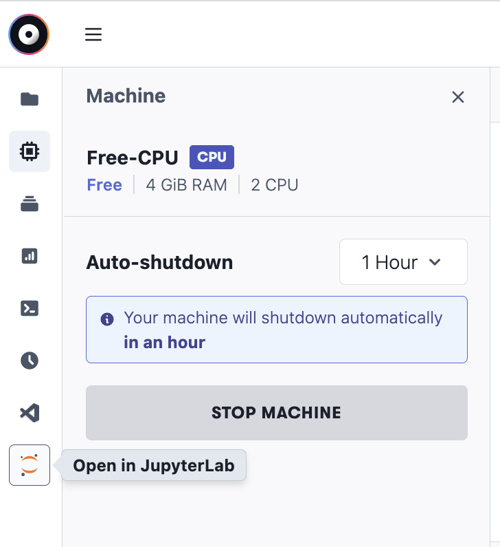

Most people don’t have a GPU that is suited for Deep Learning installed in their working machine, and in fact you don’t need to. It’s quite easy to setup a remote GPU server nowadays, and in this blog I will explain how to do so with Paperspace Gradient.
I started using Paperspace because of a recommendation from Jeremy Howard in his Live Coding Videos, see here.
If you haven’t seen these lectures, I can highly recommend them. They are a great resource on many things related to getting started with Deep Learning, especially a lot of productivity hacks and practical tips on getting a good setup.
However, the Paperspace setup explanations are a bit out-dated which can lead to confusion when following along with the video’s. This blog will hopefully help others to navigate this and quickly set-up a remote GPU server. I would advice anybody who wants to try Paperspace, to first watch the videos from Jeremy to have a general idea of how it works, and then follow these steps to quickly get set-up.
Once you have signed up to Paperspace, go to their Gradient service and create a new project. Paperspace has a free tier, as well as a pro- ($8/month) and growth-plan ($39/month). I personally signed up for the pro-plan, which has a very good value for money. You get 15Gb persistent storage and free Mid instance types:
- A4000
- RTX5000
- RTX4000
- P5000
If available, I take the A4000, which is the fastest and comes with 16GB of GPU memory.
Paperspace has both free and paid servers. The free ones come with a 6 hour usage limit, after that they are automatically shut down. The paid servers you can use as long as you like. Sometimes the free servers are out of capacity, which is a bit annoying. In my experience however most of the time I’m able to get what I need.
With the pro-plan you can create up to 3 servers, or “Notebooks” as they are called at Paperspace (I’ll call them Notebook Servers). So let’s create our first Notebook Server:
- Select the “Fast.AI” runtime
- Select a machine, for example the Free-A4000 if you have the pro-plan. You can always change this afterwards.
- Remove the Workspace URL under the advanced options to create a totally empty server.
The best user experience is through the JupyterLab interface:

Which Python are we running?
Next, let’s open a terminal and get familiar with our Server
Terminal
> which python
/usr/local/bin/python
> python --version
Python 3.9.13This is thus pointing to the base Python installation. However, in the PATH variable we are also seeing things related to conda / mamba:
Terminal
> echo $PATH
/root/.local/bin:/root/.conda/bin/:/usr/local/nvidia/bin:/usr/local/cuda/bin: /usr/local/sbin:/usr/local/bin:/usr/sbin:/usr/bin:/sbin:/bin:/root/mambaforge/binAnd indeed we can execute:
Terminal
> mamba list | grep python
ipython 8.5.0 pyh41d4057_1 conda-forge
ipython_genutils 0.2.0 py_1 conda-forge
python 3.10.6 h582c2e5_0_cpython conda-forge
python-dateutil 2.8.2 pyhd8ed1ab_0 conda-forge
python-fastjsonschema 2.16.2 pyhd8ed1ab_0 conda-forge
python_abi 3.10 2_cp310 conda-forgeSo we are having both a mamba based Python 3.10.6 and a base installation of Python 3.9.13.
Let’s open a Jupyter Notebook and see which Python version is running:
Untitled.ipynb
import sys
sys.versionFrom which we get '3.9.13 (main, May 23 2022, 22:01:06) \n[GCC 9.4.0]'. Jupyter is thus running the base Python installation.
This is different from the videos, back when the videos were recorded the setup of these servers was different and the mamba based Python was being used. This shouldn’t be a problem, but it’s something to be aware of.
Since we are running the base Python version, we can inspect all the packages that are installed:
Terminal
> pip list
...
fastai 2.7.10
fastapi 0.92.0
fastbook 0.0.28
fastcore 1.5.27
fastdownload 0.0.7
fastjsonschema 2.15.3
fastprogress 1.0.3
...
torch 1.12.0+cu116
torchaudio 0.12.0+cu116
torchvision 0.13.0+cu116
...Persisted Storage at Paperspace
We have 2 special folders at Paperspace, in which we can store things that we want to persist. Anything that we store outside of these folders will not be there whenever we close and restart the Notebook Server.
Naturally, we will make lots of use of these folders, since any additional installations of Python packages, configuration files for interacting with GitHub, Kaggle or HuggingFace, as well as any notebooks we create or models we would like to store need to be persisted in these folders.
These two folders are called /storage and /notebooks. Anything in our /storage is shared among all the Notebook Servers we are running (with the pro-plan you can create up to 3 different Notebook Servers), whereas anything that is stored in the /notebooks folder is only persisted on that specific Notebook Server.
Set up
In the first few videos, Jeremy shows a lot of tricks on how to install new packages and set up Git. After the recording of these videos, he made a GitHub repo which facilitates this setup greatly and makes most of the steps he is doing in the videos no longer necessary. So let’s use that:
Terminal
git clone https://github.com/fastai/paperspace-setup.gitNext, we can: - cd paperspace-setup - ./setup.sh
Let’s have a look at what the setup.sh file does:
setup.py
#!/usr/bin/env bash
mkdir /storage/cfg
cp pre-run.sh /storage/
cp .bash.local /storage/
echo install complete. please start a new instanceFirst it’s creating a new directory inside of our /storage folder called cfg. As we will see, inside of which all our configurations will be stored.
Next, the script copies 2 files to our storage folder. Let’s have a closer look at those
pre-run.sh
Paperspace executes /storage/pre-run.sh right in the beginning of when we are creating or restarting our Notebook Server. This is great, because it allows us to set things up the way we need it.
Let’s first have a closer look at this snippet:
pre-run.sh (snippet)
for p in .local .ssh .config .ipython .fastai .jupyter .conda .kaggle
do
if [ ! -e /storage/cfg/$p ]; then
mkdir /storage/cfg/$p
fi
rm -rf ~/$p
ln -s /storage/cfg/$p ~/
doneSo for a list of strings (.local .ssh ...), we are creating a directory inside of our /storage/cfg folder if it doesn’t exist, and then symlinks are created to the home directory (~).
This means that: - Whenever something is stored during a session in any of these symlinked folders (e.g. ~/.local), this is actually stored in the associated storage folder (e.g. /storage/cfg/.local). All this is thus persisted! - Whenever we restart our Notebook Server, all the things that have been previously been persisted (e.g. in /storage/cfg/.local) are available again in the home directory (e.g. ~/.local).
And as it turns out, many tools we want to use have their configuration files in this home folder. So this will ensure they work across restarts of our Notebook servers.
.local
Before we saw that the FastAI runtime comes with a number of installed Python packages. If we want to install new packages, we could do: pip install <package>. This installs the packages in /usr/local/lib, so this is not persisted and would mean that every time we restart the Notebook Server we would have to reinstall the package.
Instead, we can install the package in a different location with pip install -U <package>. This installs the package only for the user in the ~/.local directory, and as we have seen this folder is persisted!
.ssh
To authenticate with GitHub without using passwords, we use GitHub ssh keys. We can create them by running ssh-keygen. This creates by default two files in ~/.ssh, the private key (id_rsa) and the public file (id_rsa.pub). We need to upload the public key to GitHub and we need to keep the private key in the ~/.ssh folder. Since this folder is now persisted, we can authenticate with GitHub across restarts!
By now you probably get the idea, any of these folders represent a certain configuration we want to persist.
In the second part of the scrip we do exactly the same thing, but for a number of files instead of directories:
pre-run.sh (snippet)
for p in .git-credentials .gitconfig .bash_history
do
if [ ! -e /storage/cfg/$p ]; then
touch /storage/cfg/$p
fi
rm -rf ~/$p
ln -s /storage/cfg/$p ~/
doneNow that we understand this file, let’s have a closer look at the second file.
.bash.local
.bash.local
#!/usr/bin/env bash
alias mambai='mamba install -p ~/.conda '
alias pipi='pip install --user '
export PATH=~/.local/bin:~/.conda/bin/:$PATHThis is a short script that gets called whenever we open a terminal. As you can see it defines two aliases to install things persistently with either mamba (mambai) or pip (pipi).
At this point you might wonder why we have mamba at all, since we have seen that we are using a base Python version and we can install things with pip (or pipi). And in fact installing packages through mamba will not make them accessible to our Jupyter Notebook environment. I guess Jeremy has done this to be able to install none-Python specific packages that he wants to use from the Terminal. For example, in the videos he talks about ctags which he installs through mamba. So it functions as a general package manager, somewhat similar to apt-get.